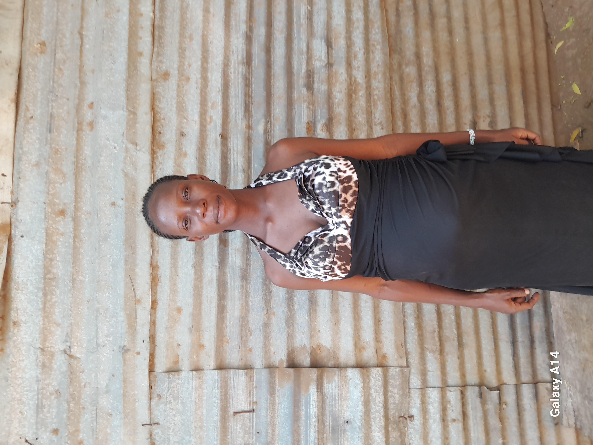

A Mother's Strength Amidst Adversity
For many, the word "refugee" conjures images of struggle, loss, and uncertainty. However, behind each refugee is a unique story of resilience and hope. One such story is that of Aza Nsbimana, a Burundian refugee who has lived in Kakuma Refugee Camp since 2009.
Having endured hardships, loss, and displacement, Aza has navigated life’s challenges with unwavering determination. Her journey is one of survival, resilience, and the hope of a better future for her children.
Aza’s life in Burundi was marked by sorrow and hardship. As an orphan, she and her sister faced insurmountable difficulties. After the death of their parents, they found solace with their grandmother, but her passing left them with no family to turn to. The fear of an uncertain future loomed over them, but a ray of hope appeared when they learned about a place where they could receive support and opportunities—Kakuma Refugee Camp.

With the knowledge that their aunt was already in the camp, Aza and her sister made the brave decision to leave Burundi and head to Kenya. Their journey began in Nairobi, where the kindness of fellow Burundians helped them navigate their way to the UNHCR main office in Westlands. From there, they were directed to Kakuma Refugee Camp, where their new life would begin.
" I fight every day—not just to survive, but to give my children a future beyond suffering. "
Life in the Camp: Finding Strength in Hardships
Kakuma is home to thousands of refugees, each carrying their own struggles. Aza quickly realized that while life in the camp offered some relief, it also came with its own challenges. She was taken in by a foster parent from Rwanda, who treated her and her sister like family. However, as time passed, her foster parent was granted resettlement, leaving Aza and her sister to fend for themselves once again.
Determined to build a future, Aza enrolled in Angelina Jolie Primary School in 2012, where she pursued her education. But life took another turn when she became pregnant in 2017, forcing her to switch to day schooling at KRSS. Motherhood presented new struggles, and the absence of anyone to care for her child made it nearly impossible for her to continue her education.
A Plea for a Better Future
The challenges in Kakuma are endless—lack of jobs, inadequate healthcare, and increasing daily struggles. Refugees like Aza deserve a chance to create a future where they can live with dignity and hope. Her story serves as a call to action for humanitarian organizations, governments, and individuals to provide better resources, mental health support, and job opportunities for refugees.
"Everyone is passing through their own struggles," Aza reflects. "But all we want is a chance to build a life, to work, to educate our children, and to heal."
Aza’s story is not just about survival but about strength, resilience, and the desire for change. It is a reminder that behind every statistic, there is a human being—a mother, a daughter, an artist, a dreamer—yearning for a better tomorrow.